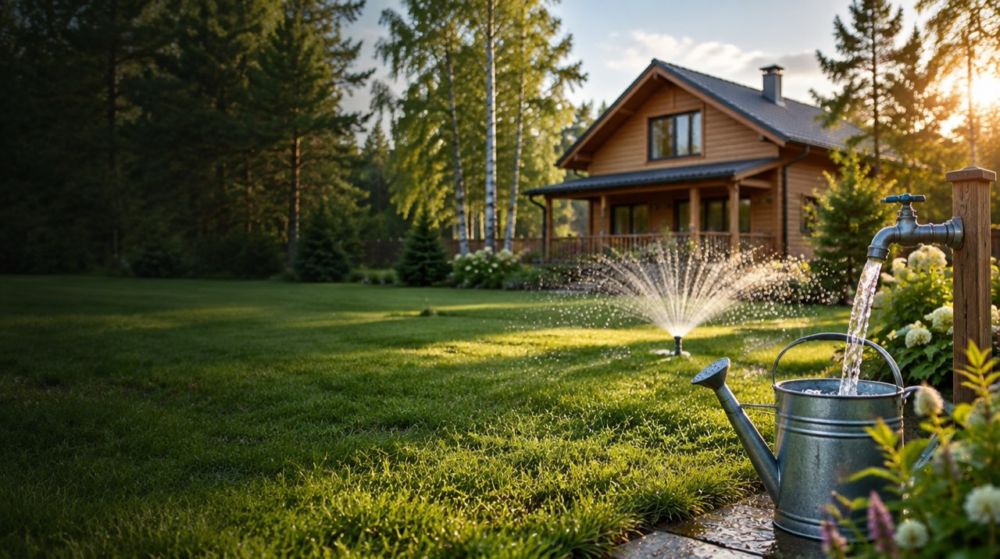
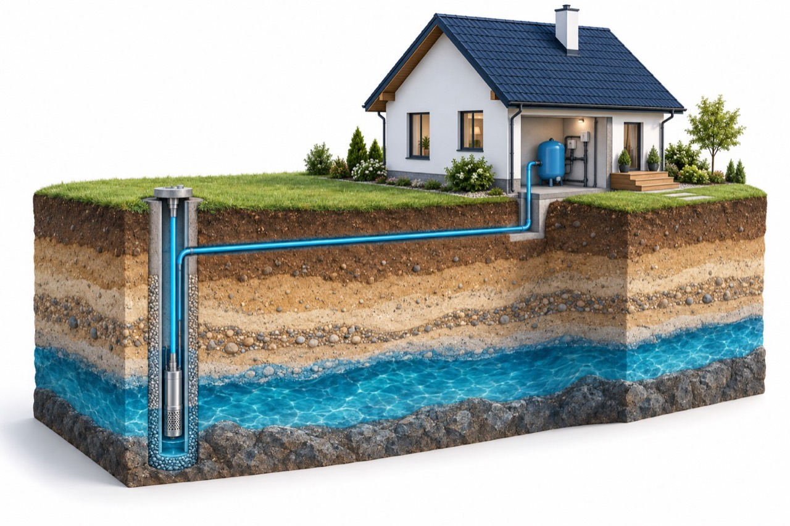

Бурение скважины
Инженер бесплатно определяет место на участке. В цену метра входят трубы, бурение и прокачка. Четыре конструкции — от пластика до 50 м до бесшовной стали до 200 м. Гарантия 2–5 лет и паспорт скважины.
Рассчитать бурение ↗
САНКТ-ПЕТЕРБУРГ И ЛЕНИНГРАДСКАЯ ОБЛАСТЬ
Бурение, насос и водоснабжение —
от первого расчёта до вашего крана.
РЕШЕНИЯ ДЛЯ ВАШЕГО УЧАСТКА
Выберите нужный объём.
Комплектацию уточняет специалист.

Скважина → Насос → Автоматика → Ваш дом
Концептуальная иллюстрация. Конструкцию и глубину подбирают под участок.Инженер бесплатно определяет место на участке. В цену метра входят трубы, бурение и прокачка. Четыре конструкции — от пластика до 50 м до бесшовной стали до 200 м. Гарантия 2–5 лет и паспорт скважины.
Рассчитать бурение ↗ТопДриллРус — официальный дилер итальянских насосов Pedrollo. Подбор, поставка и монтаж — одна компания, без посредников. Расчёт оборудования под вашу скважину бесплатный.
Водонапорная труба от скважины в дом, подключение системы. Фильтрацию подбирают по анализу воды. Через несколько дней после бурения инженер приезжает проверить, как работает скважина.
ПРЕДВАРИТЕЛЬНАЯ ОЦЕНКА
Посмотрите, из чего складывается бюджет.
Телефон для расчёта не нужен.
Это ваше предположение, а не прогноз глубины. Фактическая глубина определяется при бурении.
НАШИ РАБОТЫ
Фотографии из галереи компании.
От бурения до обустройства.
Участок, потребление воды, условия для заезда техники.
Конструкция скважины, состав работ и условия расчёта стоимости.
Фиксируем фактические параметры скважины в паспорте.
Если обустройство включено в заказ — монтируем согласованную систему.
ОПЫТ ЗАКАЗЧИКОВ
«Ребята Топ Дрилл - вы специалисты высшего класса! Не было лишних нервов, когда я задавал вопросы. По полочкам все разложили и обрисовали что по чем, и сколько примерно займут земляные работы. Спасибо»
Прочитать оригинал ↗«Большущее спасибо спецам Топ Дрилл. Выручили так выручили. Надо было скважину пробурить, к кому идти непонятно. Сосед подсказал. Бригада во главе со старшим Василичем приехала почти в договоренное время. Опоздали правда на часа пол. Обрисовали план работ, смету по работам. Я так прикинул, прозвонил еще пару бригад, но Топ Дрилл оказался более выгодным по цене. Пришлось снова вызывать ребят. Работой доволен.»
Прочитать оригинал ↗«Спасибо сотрудникам компании за профессиональную работу и грамотную консультацию, особое преимущество - постоплата! Всем рекомендую ТопДрилл!»
Прочитать оригинал ↗Отзывы приведены дословно с Яндекс Карт, орфография авторов сохранена. Выбраны три из пяти; общий рейтинг учитывает все оценки. Публикации 2016 года.
ПЕРЕД НАЧАЛОМ РАБОТ
Данные о районе и соседних скважинах дают ориентир. Фактическую глубину и водоотдачу определяют в процессе работ. Онлайн-калькулятор не может гарантировать наличие воды.
В опубликованном прайсе компании указаны бурение, трубы и прокачка. Насос, автоматику и подводку воды нужно согласовать отдельно. До заказа уточните актуальный тариф и все дополнительные работы.
До приезда согласуйте подъезд, ширину ворот, место размещения техники и известные подземные коммуникации. Требования зависят от установки; специалист подтвердит их для вашего участка.
Прозрачность и отсутствие запаха не подтверждают качество воды. Сначала нужен анализ, по его результатам подбирается очистка при необходимости.
ВАШ СЛЕДУЮЩИЙ ШАГ
Соберите параметры в одну заявку.
Так специалисту проще подготовить предложение.